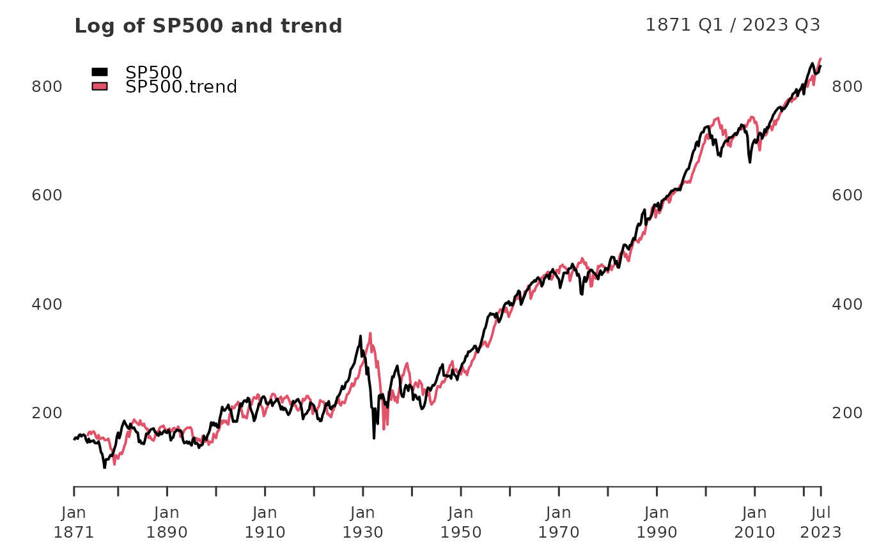
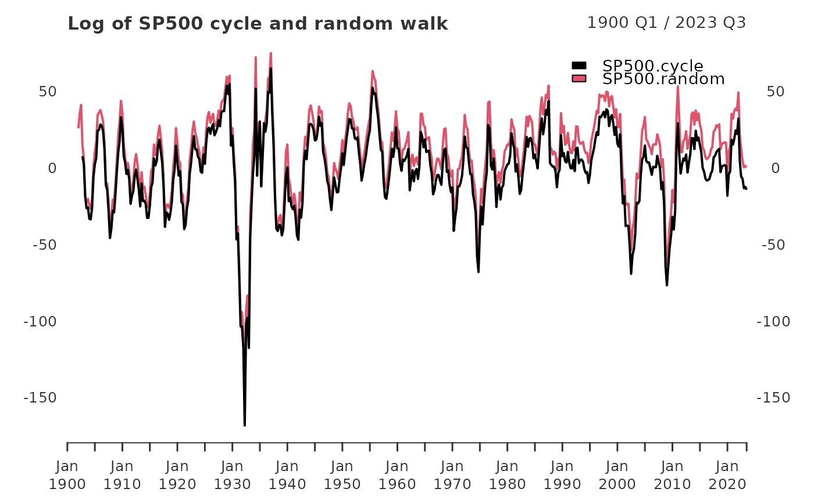

SP500 Robert Schiller's data set for U.S. Stock Markets 1871-2021 and CAPE Ratio.
data(SP500)
An xts object containing observations of U.S. Stock Markets 1871-Present and CAPE Ratio.
Frequency: Monthly
Date Range: 1871-01 to 2020-03
Data updated: 2021-05-05 05:08 PM CST
SP500: Nominal prices of the S&P composite index, April 2021 observation is 04/05 close
Dividends: Nominal dividends
Earnings: Nominal Earnings, S&P 500 estimated
CPI: Schiller's Consumer Price Index data Schiller used for transformation to Real prices
GS10: Schiller's Long term interest rate 10-Year Treasury Constant Maturity Rate, April 2021 observation is 04/05 close
Real_SP500: Real prices of the S&P 500 composite index
Real_Dividends: Real Dividends
Real_SP500_TR: Real Total Return Price of the S&P 500 composite index
Real_Earnings: Real Earnings
Real_Earnings_TR: Real Total Return Scaled Earnings
CAPE: Cyclically Adjusted Price Earnings Ratio. P/E10 or CAPE.
CAPE_TR: Cyclically Adjusted Total Return Price Earnings Ratio. P/E10_TR or CAPE_TR.
CAPE_Yield: Excess Cape Yield.
Bond_TR: Total Bond Returns.
Real_Bond_TR: Real Total Bond Returns.
Schiller, Robert J. Irrational Exuberance, Princeton University Press 2000, Broadway Books 2001, 2nd ed. 2005, 3rd ed. 2015. http://www.econ.yale.edu/~shiller/data.htm
Download .xls file directly from here: http://www.econ.yale.edu/~shiller/data/ie_data.xls
This data set consists of monthly stock price, dividends, and earnings data and the consumer price index (to allow conversion to real values), all starting January 1871. The price, dividend, and earnings series are from the same sources as described in Chapter 26 of my earlier book (Market Volatility, Cambridge, MA: MIT Press, 1989), although now I use monthly data, rather than annual data. Monthly dividend and earnings data are computed from the S&P four-quarter totals for the quarter since 1926, with linear interpolation to monthly figures. Dividend and earnings data before 1926 are from Cowles and associates (Common Stock Indexes, 2nd ed., Bloomington, Ind.: Principia Press, 1939), interpolated from annual data. Stock price data are monthly averages of daily closing prices. The CPI-U (Consumer Price Index-All Urban Consumers) published by the U.S. Bureau of Labor Statistics begins in 1913; for years before 1913, I spliced to the CPI Warren and Pearson's price index, by multiplying it by the ratio of the indexes in January 1913. December 1999 and January 2000 values for the CPI-Uare extrapolated. See George F. Warren and Frank A. Pearson, Gold and Prices (New York: John Wiley and Sons, 1935). Data are from their Table 1, pp. 11–14.
data(SP500) SP500_qtr <- xts::to.quarterly(SP500$SP500, OHLC = FALSE) log_SP500 <- 100*log(SP500_qtr) SP500_trend <- yth_filter(log_SP500, h = 8, p = 4, output = c("x", "trend"), family = gaussian) main <- "Log of SP500 and trend" plot(SP500_trend, grid.col = "white", legend.loc = "topleft", main = main)SP500cycle <- yth_filter(log_SP500["1900/"], h = 8, p = 4, output = c("cycle", "random"), family = gaussian) main <- "Log of SP500 cycle and random walk" plot(SP500cycle, grid.col = "white", legend.loc = "topright", main = main)